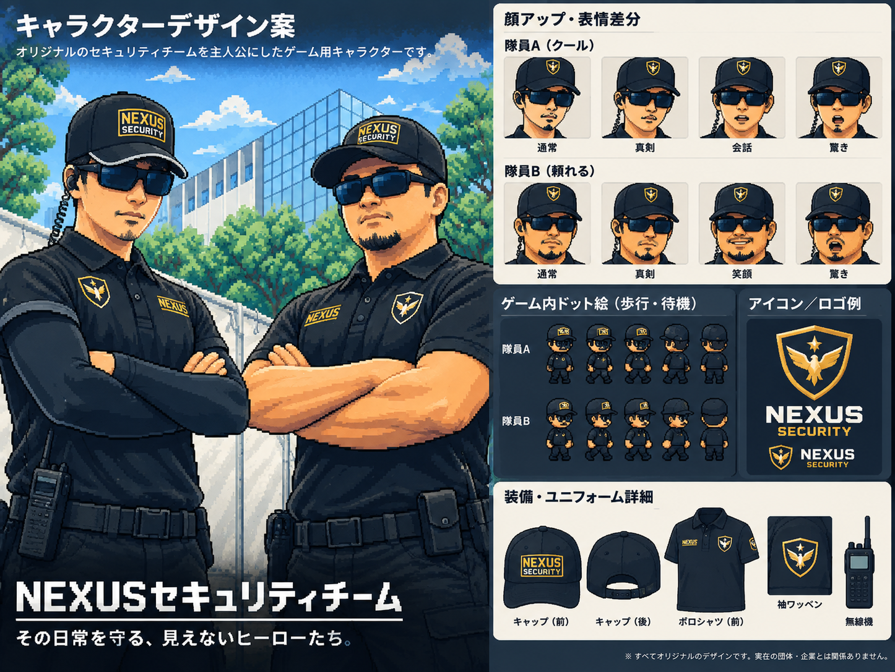

IDOL LIVE SECURITY ACTION
ドル現場防衛戦.
アイドルの現場を、守り抜け。
60 秒の現場勝負07 種の警戒対象

下北・地下ライブハウス
NEXUS SECURITY / HAYATO & DAICHI現場で厄介、絶対許さない。
MISSION SELECT
今日の現場を選べ。
会場 × アイドルで、現場は変わる。
01 会場 VENUE
02 出演アイドル LINEUP
本日の警戒事項
違反者をタップで対応。善良なオタクは守ろう。架空の警備会社・アイドルによるフィクション
残り時間60秒
退場0人
SCORE00000
現場制圧ゲージ0%
赤いマークの違反者をタップ！